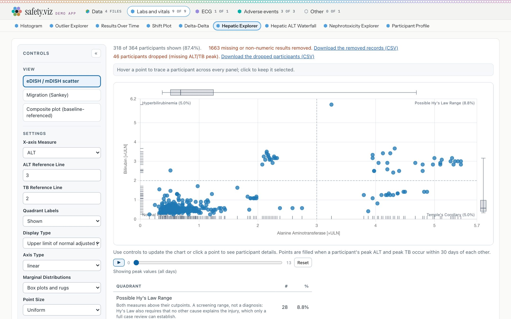
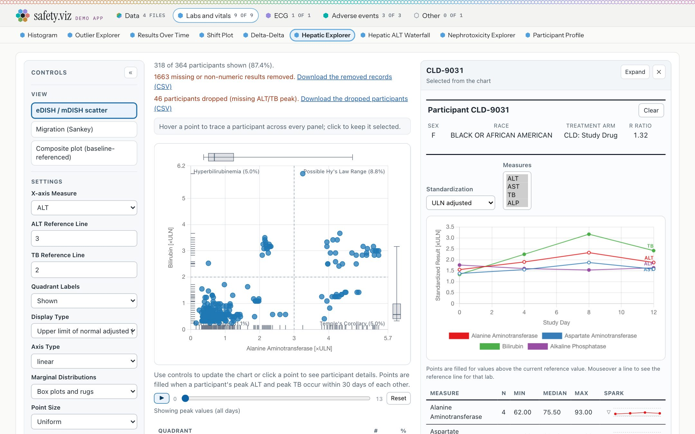
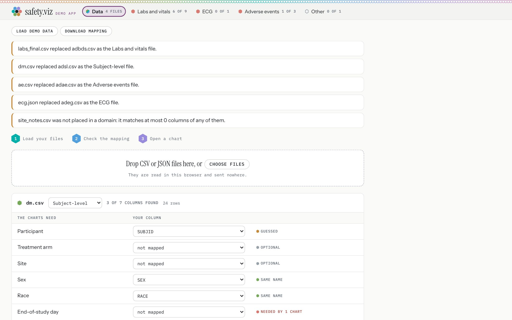
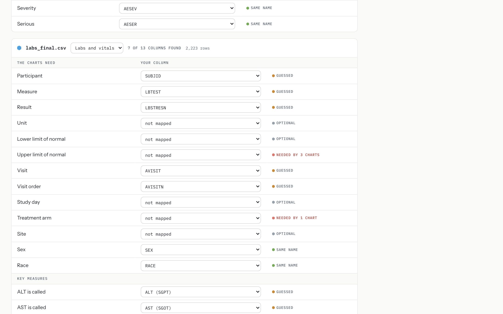
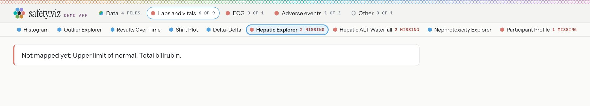
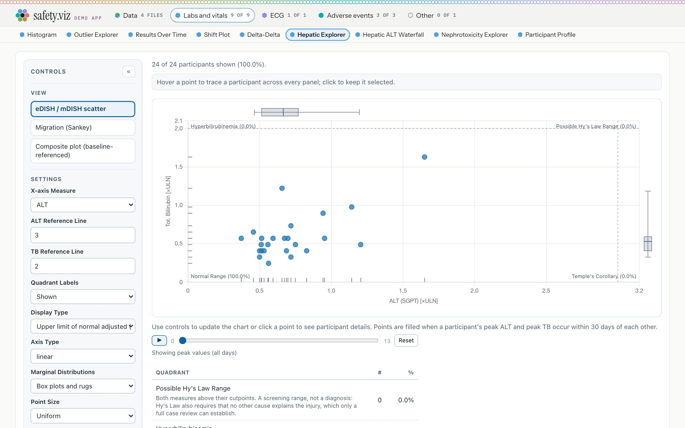
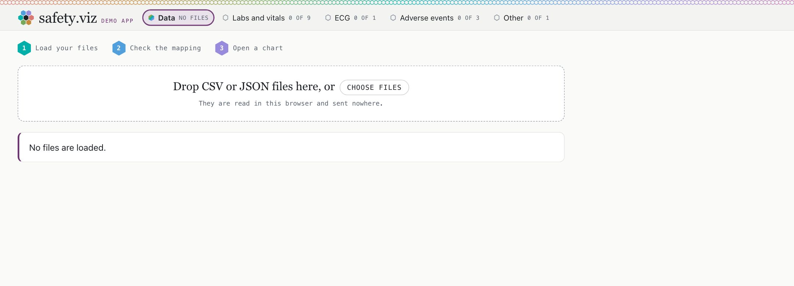
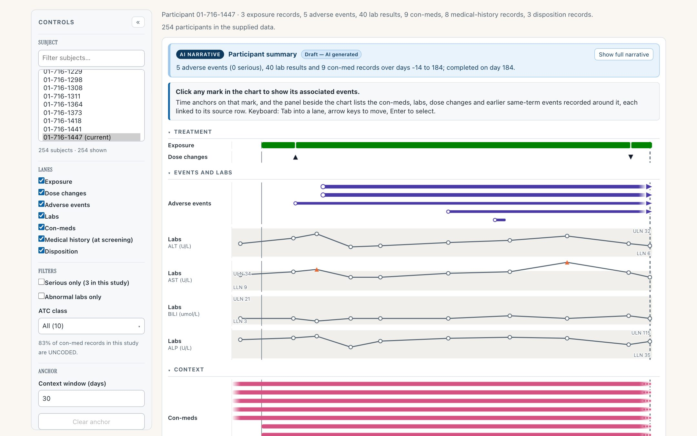
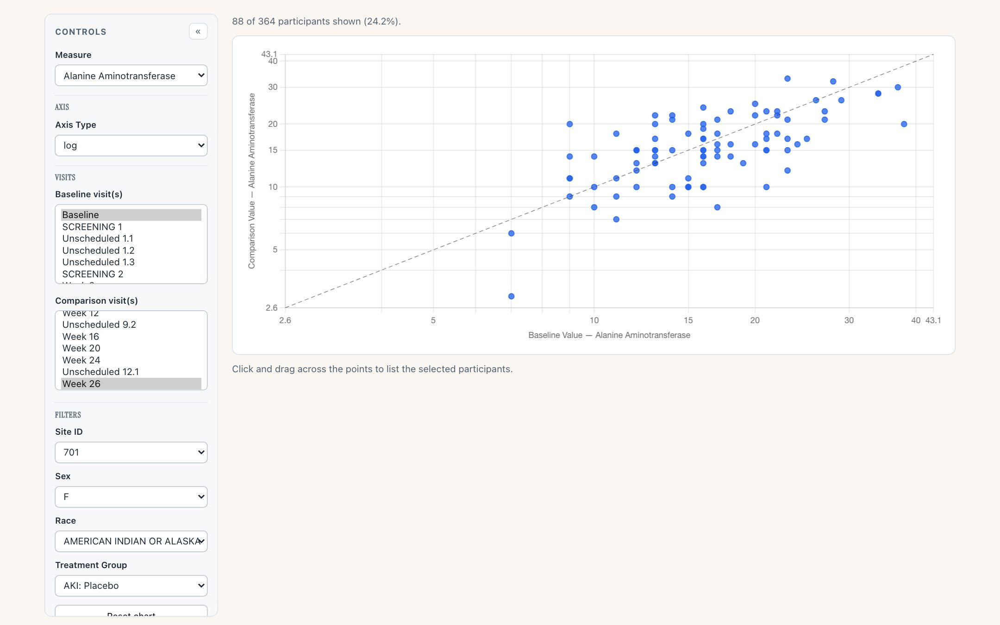
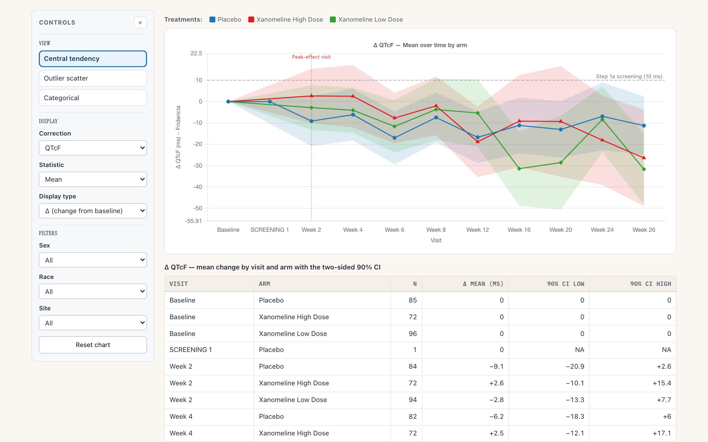

safety.viz release review 2026-10-02
safety.viz becomes something you can use on your own study. A demo app puts every chart on one study, says which ones your data can feed, and lets you load your own files and map their columns, all in the browser. A fourteenth renderer follows one participant through a trial. And nine requests from the people who used the original renderers land on the existing charts. Every capture below was taken from the live dev site, which is the release-candidate build.
14 renderers, 1 demo app 1,891 unit + 335 browser tests nothing leaves the browser: asserted by test promotes dev → main as v1.8.0
The docs site keeps its gallery and its per-chart demos. The app is a page of its own, with its own header and footer, so the chart has the full width of the screen. The header has a tab for your data and a tab for each data domain, saying how many of that domain’s charts the loaded data supports. Beneath the tabs, on one line, are the open domain’s charts.

The demo study, on the hepatic explorer. Each domain has a hue, carried by a small hex beside its name: blue for labs and vitals, violet for ECG, teal for adverse events. The open chart’s chip is highlighted, and that chip is the view’s name: there is no separate heading taking up room.

With a participant selected, the chart’s own controls, the chart and the participant profile sit side by side. Keeping the app’s own parts to a header and a footer is what leaves the chart room here.
Why it matters
The original safetyGraphics app put a study’s charts in one place and told you which ones your data could feed. safety.viz had fourteen separate demo pages and no shared statement of what data a study supplies. This is that app again, running entirely in the browser.
Try it
Open the demo appDrop CSV or JSON files on the Data view. Each file is read in the browser and placed in a domain by its column names, with the number of that domain’s columns it carries. A test asserts that no network request leaves the page from the first file onward.

A study whose columns carry none of the default names. Four files are placed; the fifth belongs to no domain, and the page says so in one sentence and keeps it, with a picker to place it by hand.

One table per file: what the charts need on the left, your column on the right. A row filled because the name matched says “same name”. A row filled from a short list of known SDTM and ADaM alternatives says “guessed”. Nothing fuzzier is attempted. An empty row says how many charts need it. The same table asks what your data calls the measures some charts find by name.

Before any correction, a chart that cannot draw says what it is missing, by name.

After six rows are set by hand, the same chart draws from the user’s own files. The data is never renamed or rewritten: the mapping only tells each chart which column to read.

The same app as one HTML file, under 1 MB, opened from disk with the network off. It starts empty and uses your system’s fonts, because it loads nothing.
Two rules to confirm
Why it matters
A study programmer has a folder of extracts and wants to see them in the charts without installing anything or sending data anywhere. The old app did this in R. Here the files are read with the browser’s own file API, and the single file needs no server at all.
A guess is always labelled as a guess, and a gap is priced in the charts it turns off, by name. The mapping downloads as a small JSON file, and choosing that file again with your data restores it.
Try it
Open the Data viewThe fourteenth renderer, and the first that looks at one participant and not across them: exposure, dose changes, adverse events, labs, concomitant medications, medical history and disposition as stacked lanes on one study-day axis. Clicking any mark anchors time on it and lists what was recorded around it. The chart can also draft a narrative of what the record shows, every sentence carrying the rows it came from, marked as a draft until a reviewer accepts it.

One participant’s course, with the drafted summary above the lanes. The summary on the site comes from a built-in stub that writes its sentences from the participant’s own rows; a host supplies a model.
Why it matters
Reviewing a single participant usually means opening five listings and lining the days up by eye. This puts them on one axis, and makes the question “what else was happening then” one click.
The narrative layer is the program’s first AI feature. Its rules are the product: grounded in the rows on screen, cited sentence by sentence, never published without a reviewer’s accept.
Try it
Open the Patient Journey ExplorerWhen the RhoInc and SafetyGraphics renderers were retired they left 282 open issues behind. A survey of all twelve trackers found 144 still worth carrying over and picked nine that the shared modules made cheap. All nine are in this release.

The Shift Plot on a log scale, asked for in 2016. Both axes share one domain, so the identity line still means no change.

The QT explorer now prints the confidence intervals it was only drawing, and carries its caution in every view.
Why it matters
These were filed by the clinicians, programmers and reviewers who ran the original charts on studies, some as long ago as 2016. The release notes name the issue each one answers and, where the tracker recorded it, the person who filed it.
Try it
Open the Shift Plot